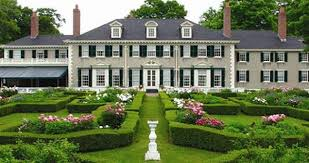
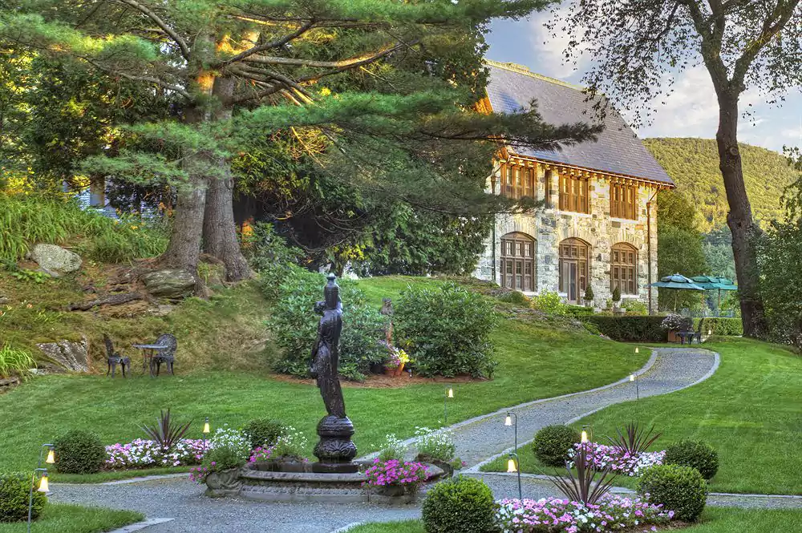

About: This casual bar and restaurant is a hit with everyone who visits! It’s kid-friendly and good for group events, plus there’s also an outdoor seating area. The food is great and the overall aesthetic of the place is cool; it’s definitely a place to check out.
About: The Green Mountain Inn is a country style hotel with great service. Within the hotel is the Whip Bar and Grill, which has awesome cuisine, and the hotel also has a health club (which provides massages, access to a sauna, and a Jacuzzi) and a heated outdoor pool. It’s a wonderful place to stay if you’re ever in Stowe, Vermont.
About: This house once belonged to Robert Lincoln, the son of President Lincoln and his wife Mary Todd, complete with miles of walking paths, a goat farm, a newly restored Pullman palace car, and more. It’s a beautiful piece of history that shouldn’t be missed when you travel to Vermont.

Spa
Castle Hill Spa
Location: 152 Castle Hill Dr, Proctorsville, VT 05153
About: This popular spa, located within the Castle Hill Hotel, contains both a wellness location for all your relaxation-oriented needs and a fitness center for your physical well-being as well. It’s a magnificent place to rejuvenate and chill out while you’re visiting Vermont.

Museum
Billings Farm and Museum
Location: 69 Old River Rd, Rte. 12 North, Woodstock, VT 05091
About: This outdoor history museum has plenty activities for families to participate in outdoors all year round, including a dairy farm and a guided tour. Many of the activities available also involve animals (cows, horses, etc.) If you want somewhere to take your family while you’re travelling in Vermont, this place should definitely be on your list.